Logistic回归
1 最大似然估计
1.1 引例
投三次硬币决定来上课还是在宿舍睡觉，每出现一次正面代表上课多一票，每出现一次反面代表睡觉多一票。结果是前两次为正面、最后一次为反面。你可能会怀疑硬币是不是有问题，正面出现的概率真是1/2吗？可以计算正面的概率不同取值时，该事件的概率。
| \(\mathbf{y}\) | \(\hat{\theta}\) | \(\theta^{1s} \times (1-\theta)^{0s}\) | \(f_B (\mathbf{y} \vert \hat{\theta})\) |
|---|---|---|---|
| \({1,1,0}\) | \( 0.00\) | \( 0.00^2\times (1-0.00)^1\) | \( 0.000\) |
| \({1,1,0}\) | \( 0.10\) | \( 0.10^2\times (1-0.10)^1\) | \( 0.009\) |
| \({1,1,0}\) | \( 0.20\) | \( 0.20^2\times (1-0.20)^1\) | \( 0.032\) |
| \({1,1,0}\) | \( 0.30\) | \( 0.30^2\times (1-0.30)^1\) | \( 0.063\) |
| \({1,1,0}\) | \( 0.40\) | \( 0.40^2\times (1-0.40)^1\) | \( 0.096\) |
| \({1,1,0}\) | \( 0.50\) | \( 0.50^2\times (1-0.50)^1\) | \( 0.125\) |
| \({1,1,0}\) | \( 0.60\) | \( 0.60^2\times (1-0.60)^1\) | \( 0.144\) |
| \({1,1,0}\) | \( 0.67\) | \( 0.67^2\times (1-0.67)^1\) | \( 0.148\) |
| \({1,1,0}\) | \( 0.70\) | \( 0.70^2\times (1-0.70)^1\) | \( 0.147\) |
| \({1,1,0}\) | \( 0.80\) | \( 0.80^2\times (1-0.80)^1\) | \( 0.128\) |
| \({1,1,0}\) | \( 0.90\) | \( 0.90^2\times (1-0.90)^1\) | \( 0.081\) |
| \({1,1,0}\) | \( 1.00\) | \( 1.00^2\times (1-1.00)^1\) | \( 0.000\) |
我们将以分布参数的函数来描述观察数据的联合分布概率称之为似然函数（likelihood function），表示为\(L(\mathbf{y};\theta)\)。 \[L=\theta^2(1-\theta)^1\] \[log L=2log\theta + 1log(1-\theta)\] \[\frac{\partial log L}{\partial \theta}=\frac{2}{\theta}-\frac{1}{(1-\theta)}=0\] \[\hat \theta=2/3\] 最大化似然函数的\(\theta\)值是最大似然估计（maximum likelihood estimate, MLE）
pi.hat <- seq(0,1,.001) f.y <- pi.hat^2*(1-pi.hat)^1 plot(pi.hat,f.y,type="l",bty="l",ylab="",lwd=3,xlab=substitute(hat(theta)),las=1) segments(.67, 0.0, x1 = .67, y1 = .148, col = "grey30", lwd = 2) segments(.62, .149, x1 = .72, y1 = .149, col = "grey30", lty = par("lty"), lwd = 2)
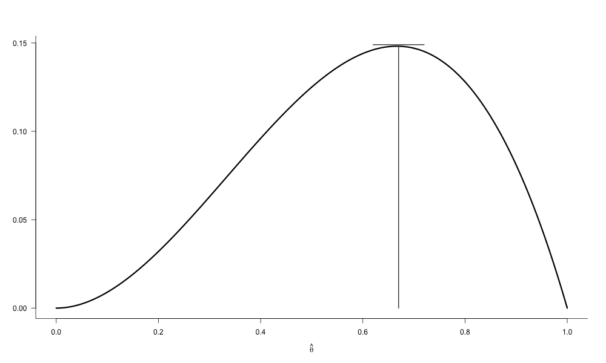
1.2 最大似然推断
最大似然推断并不是将数据视为随机的、参数视为固定的，而是将数据视为固定的，寻找什么样的参数最有可能生成这个数据，即将数据的联合分布视作某个分布密度或概率分布函数的参数的函数。
- 线性回归系数的最大似然推断
2012年189个国家的二氧化碳排放量与人均GDP（购买力平价），如果构建简单模型：\(Y=\beta_0+\beta_1 X +\epsilon \)，其中Y为二氧化碳排放量的对数，X为人均GDP的对数。
library(WDI) wdi<-WDI(country = "all", indicator = c("EN.POP.DNST", #人口密度 "EN.ATM.CO2E.KT", #二氧化碳排放量 "NY.GDP.PCAP.PP.CD"), #购买力平价计算的人均GDP start = 2012, end = 2012, extra = TRUE, cache = NULL) wdi<-na.omit(subset(wdi, region !="Aggregates")) names(wdi)[4:6]<-c("pop.den", "co2.kt","gdp.pc.ppp" ) out<-lm(log(co2.kt) ~ log(gdp.pc.ppp), data=wdi) plot(log(wdi$gdp.pc.ppp ), log(wdi$co2.kt ), pch=19, xlab="2012 GDP per capita at PPP, log $US", ylab="2012 CO2 emissions, log Ktons",bty="l", las=1) abline(reg=out,lwd=3) arrows(x1=log(wdi[wdi$iso3c=="CHN","gdp.pc.ppp"]), y1=fitted(out)[rownames(out$model)[which(wdi$iso3c=="CHN")]], x0=log(wdi[wdi$iso3c=="CHN","gdp.pc.ppp"]), y0=log(wdi[wdi$iso3c=="CHN","co2.kt"]), col="black", length=0.1, angle=20, lwd=2.5) points(log(wdi[wdi$iso3c=="CHN","gdp.pc.ppp"]), log(wdi[wdi$iso3c=="CHN","co2.kt"]), pch = 19, cex= 3, col="red")
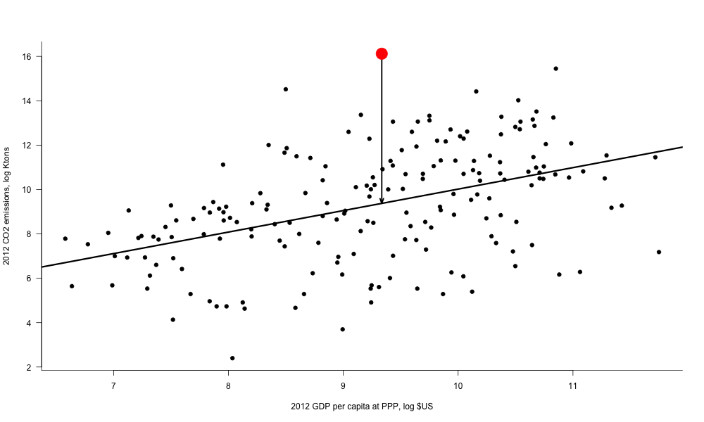
- 首先假定每个观测\(Y_i\)独立同分布，服从正态分布\(f_{N}(y_i ;\mu_i ,\sigma^2 )\)
- 根据线性模型，等同于\(\epsilon_i \sim f_{N}(\epsilon_i ;0,\sigma^2 )\) \[f_N (\epsilon_i ) =\frac{1}{\sigma\sqrt{2\pi}}exp[\frac{-(\epsilon_i)^2}{2\sigma^2}] =\frac{1}{\sigma\sqrt{2\pi}}exp[\frac{-(y_i-\beta_0 - \beta_1 x_i)^2}{2\sigma^2}] \]
- 似然函数是样本数据的联合分布概率，每个样本观测都是独立的，其联合分布概率等于每个观测边缘分布概率的乘积 \[L(\beta_0 ,\beta_1 ,\sigma)|{y_1,\cdots,y_n},{x_1,\cdots,x_n}) = (2\pi\sigma^2)^{(-n/2)}\prod_{i=1}^{n}exp[\frac{-(y_i-\beta_0 - \beta_1 x_i)^2}{2\sigma^2}] = (2\pi\sigma^2)^{(-n/2)}exp[\sum_{i=1}^{n}\frac{-(y_i-\beta_0 - \beta_1 x_i)^2}{2\sigma^2}]\] 取对数进行简化： \[ log L = log{(2\pi\sigma^2)^{(-n/2)}exp[\sum_{i=1}^{n}\frac{-(y_i-\beta_0 - \beta_1 x_i)^2}{2\sigma^2}]} \] \[ = -\frac{n}{2}log(2\pi\sigma^2)-\frac{1}{2\sigma^2}\sum_{i=1}^{n}(y_i-\beta_0 - \beta_1 x_i)^2 \] \[ = -\frac{n}{2}log(2\pi) - nlog\sigma - \frac{\sum_{i=1}^{n}(y_i-\beta_0 - \beta_1 x_i)^2}{2\sigma^2} \] 剔除与被估计参数无关的项： \[logL \propto -nlog\sigma - \frac{\sum_{i=1}^{n}(y_i-\beta_0 - \beta_1 x_i)^2}{2\sigma^2} \] 计算机优化程序更擅长计算最小值，采用\(-2logL\)，并且采用固定或已知的 σ 简化： \[-2logL \propto \sum_{i=1}^{n}(y_i-\beta_0 - \beta_1 x_i)^2 \] 上式显示最大似然估计与最小二乘法的参数结果是一致的。但是如果我们只是得到了一个与最小二乘法一样的结果，那么最大似然估计的意义在哪里？
library(ProfileLikelihood) wdi$lgdppc<-log(wdi$gdp.pc.ppp) xx <- profilelike.lm(formula = log(co2.kt)~1, data=wdi, profile.theta="lgdppc", lo.theta=0.84, hi.theta=1.15, length=500) with(xx, plot(theta,profile.lik,las=1,lty=1,lwd=3, type="l",pch=19,xlab=substitute(beta[1]), ylab="likelihood",yaxt="n",bty="l",main="Least Squares as MLE", xlim=c(0.85,1.1)) ) abline(v=coef(out)[2],col="gray50",lwd=3) abline(h=max(xx$profile.lik),col="gray50",lwd=4)
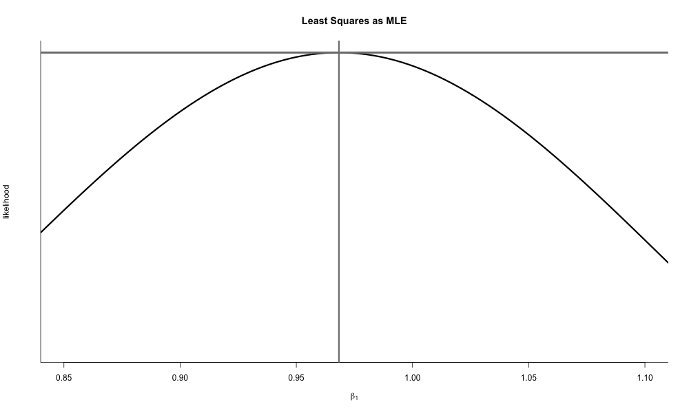
- 利用R最大化似然函数
# 建立自变量（含常数项）与因变量矩阵 x <- cbind(1,as.matrix(log(wdi$gdp.pc.ppp))) # 增加1列含1的常数项 y <- as.matrix(log(wdi$co2.kt)) K <- ncol(x); n <- nrow(x) # 观测数n和变量数K # 定义似然函数，可以选择多种参数化方式，此处采用logL的完整形式 loglik.my <- function(par,X,Y) { Y <- as.vector(y) X <- as.matrix(x) xbeta <- X%*%par[1:K] sigma <- sqrt(sum(((X[,2]-mean(X[,2]))^2)/(n-K))) # 假定标准误已知，有多种设定形式 sum(-(1/2)*log(2*pi)-(1/2)*log(sigma^2)-(1/(2*sigma^2))*(y-xbeta)^2) # 对数似然函数，加负号变为最小化 } # 将似然函数传递给最优化函数，提供初始值，选择算法，设定迭代次数等 mle.fit <- optim(c(5,5),loglik.my, method = "BFGS", control = list(trace=TRUE,maxit=10000,fnscale = -1),hessian = TRUE) if(mle.fit$convergence!=0) print("MDW WARNING: Convergence Problems; Try again!") # 计算标准诊断量 stderrors<- sqrt(diag(-solve(mle.fit$hessian))) z<-mle.fit$par/stderrors p.z <- 2* (1 - pnorm(abs(z))) out.table <- data.frame(Est=mle.fit$par, SE=stderrors, Z=z, pval=p.z) round(out.table, 2)
initial value 118297.641065 final value 551.103146 converged Est SE Z pval 1 0.33 0.68 0.49 0.62 2 0.97 0.07 13.24 0.00
1.3 异方差数据的最大似然估计
- 线性回归模型假定同方差，即对于所有的观测都有 \(y_i \sim N(\mu_i , \sigma^2 ) \)，但是如果误差项是异方差的，即 \(y_i \sim N(\mu_i , \sigma_i^2 ) \)，则会导致\(se(\hat{\beta})\)是有偏的，\(\hat{\beta}\)的估计是无效的。
- 一般采用稳健性标准误来替代“有问题”的标准误，但是，异方差被看做是数据存在的一个“问题”，仅仅是因为我们假定它不应该在“正常”的数据中存在。真实的可能是我们的线性回归假定框定了我们解决问题的范围。类比一下，为什么我们不会说“异均值”是一个问题，是因为线性回归的框架中允许了因变量均值随自变量变动（这也正是我们建模的基础），那如果我们能把\(\sigma_i^2 \) 也纳入到模型中，即对因变量方差建模，也就能更好的利用自变量解释解释因变量的均值和方差两方面的变化。
- 异方差暗含了自变量与因变量方差的关系，这可能正是我们想研究的内容。
- 实力相当的两个人才会打架，所以实力相当使得是否打架的变异程度更大
- 公立医院民营化可能不会降低平均的社会健康水平，但是会由于覆盖风险增加社会健康水平的变异程度
异方差正态模型的最大似然估计
- 随机部分：
\[y_i \sim f_N (\mu_i , \sigma_i^2 )\]
- 系统部分：
\[\mu_i = X_i \beta \] \[\sigma_i^2 = exp(Z_i \gamma) \]
- 异方差最大似然估计的推导：
- 首先假定每个观测\(Y_i\)独立同分布，服从正态分布: \[f_{N}(y_i ;\mu_i ,\sigma_i^2 )\]
- 样本数据的联合分布：\[P(y|\mu,\sigma_2 ) = \prod_{i=1}^{n}f_{N}(y_i ;\mu_i ,\sigma_i^2 ) \]
- 根据正态分布密度函数：\[P(y|\mu,\sigma_2 ) = \prod_{i=1}^{n}(2\pi\sigma_i^2 )^(-1/2)exp[\frac{-(y_i - \mu_i )^2 }{2\sigma_i^2 }] \]
- 对数似然函数：\[logL(\beta,\sigma^2 |y) \propto -\frac{1}{2}\sum_{i=1}^{n}log\sigma_i^2 - \frac{1}{2}\sum_{i=1}^{n}\frac{(y_i-\mu_i)^2}{\sigma_i^2 } \]
- 代入系统参数：\[logL(\beta,\gamma |y) \propto -\frac{1}{2}\sum_{i=1}^{n}z_i \gamma - \frac{1}{2}\sum_{i=1}^{n}\frac{(y_i-\mu_i)^2}{exp(z_i \gamma }) \]
- 假想样本量为2000的异方差数据来自真实模型： \[y_i \sim N (\mu_i , \sigma_i^2 )\] \[\mu_i = 5 + 10x_i \] \[\sigma_i^2 = exp(1+3x_i ) \]
分别采用线性回归与异方差的最大似然估计去拟合
set.seed(1234) obs <- 2000 x <- runif(obs) mu <- 5+10*x sigma2 <- exp(1+3*x) y <- rnorm(obs, mu, sqrt(sigma2)) # 线性回归拟合 lm.fit <- lm(y~x) summary(lm.fit) # 最大似然法拟合 # 建立两个系统部分的自变量 xcovariates <- x zcovariates <- x # 设置参数初始值beta0,beta1,gamma0,gamma1 stval <- c(0,0,0,0) # 设定似然函数 llk.hetnormlin <- function(param,y,x,z) { x <- as.matrix(x) z <- as.matrix(z) x <- cbind(1,x) z <- cbind(1,z) b <- param[ 1 : ncol(x) ] g <- param[ (ncol(x)+1) : (ncol(x) + ncol(z)) ] xb <- x%*%b s2 <- exp(z%*%g) sum(0.5*(log(s2)+(y-xb)^2/s2)) # optim是最小化函数，所以公式要乘以-1 } # 运行优化函数得到拟合结果 mle.fit <- optim(stval,llk.hetnormlin,method="BFGS",hessian=T,y=y,x=xcovariates,z=zcovariates) # 提取估计值 pe <- mle.fit$par # 参数的点估计 vc <- solve(mle.fit$hessian) # 协方差矩阵 se <- sqrt(diag(vc)) # 标准误 z <- mle.fit$par/se # z值 p.z <- 2* (1 - pnorm(abs(z))) # p值 out.table <- data.frame(Coefs=c("beta0","beta1","gamma0","gamma1"), Est=mle.fit$par, SE=se, Z=z, pval=p.z) print(out.table, digits=2)
Call: lm(formula = y ~ x) Residuals: Min 1Q Median 3Q Max -21.0880 -2.2792 0.0612 2.2686 19.9045 Coefficients: Estimate Std. Error t value Pr(>|t|) (Intercept) 5.0546 0.1839 27.49 <2e-16 *** x 10.0479 0.3206 31.34 <2e-16 *** --- Signif. codes: 0 ‘***’ 0.001 ‘**’ 0.01 ‘*’ 0.05 ‘.’ 0.1 ‘ ’ 1 Residual standard error: 4.108 on 1998 degrees of freedom Multiple R-squared: 0.3296, Adjusted R-squared: 0.3292 F-statistic: 982.2 on 1 and 1998 DF, p-value: < 2.2e-16 Coefs Est SE Z pval 1 beta0 5.05 0.102 50 0 2 beta1 10.04 0.278 36 0 3 gamma0 0.99 0.064 15 0 4 gamma1 3.01 0.112 27 0哪个模型更好？可以比较95%的预测区间
par(mfrow=c(1,2)) plot(x,y,pch=20) abline(a=coef(lm.fit)[1],b=coef(lm.fit)[2], col="red",lwd=3) text(0.2, 25, labels = "Linear regression fit \n 95% prediction interval", col = "red") #绘制95%预测区间 xhyp <- seq(0,1,length.out = 100) xnew <- data.frame(x=xhyp) ypred <- predict(lm.fit, newdata=xnew, interval="prediction", level=0.95) xpoly <- c(xhyp, rev(xhyp), xhyp[1]) ypoly <- c(ypred[,2], rev(ypred[,3]), ypred[1,2]) polygon(x=xpoly, y=ypoly, density=20, col="red", border=FALSE) plot(x,y,pch=20) abline(a=pe[1],b=pe[2], col="blue",lwd=3) text(0.2, 25, labels = "Heteroskedastic MLE fit \n 95% prediction interval", col = "blue") #绘制95%预测区间 # 从模型预测的分布中抽取参数来模拟结果 sims <- 10000 simparam <- mvrnorm(sims,pe,vc) # 抽取参数 # 将抽取的参数分配给betas和gammas simbetas <- simparam[,1:(ncol(as.matrix(xcovariates))+1)] simgammas <- simparam[,(ncol(simbetas)+1):ncol(simparam)] # 自变量的假想数据 xhyp <- seq(0,1,length.out = 100) # 获取因变量的预测值的期望与95%的预测区间 ypred <- matrix(NA,nrow=nrow(as.matrix(xhyp)),ncol = 3) for (i in 1:nrow(as.matrix(xhyp))) { simmu <- simbetas%*%rbind(1,xhyp[i]) # 模拟系统均值 simsigma2 <- exp(simgammas%*%rbind(1,xhyp[i])) # 模拟系统方差 # 依据模拟的均值与方差构建正态分布，并抽取10000个预测值 simy <- sqrt(simsigma2)*rnorm(sims)+simmu simy <- sort(simy) # 排序 ypred[i,1] <- mean(simy) # 预测值的期望 length.simy <- length(simy) ci = 0.95 # 根据抽取的预测值计算预测值的置信区间 ypred[i,2] <- simy[trunc((1-ci)/2*length.simy)] # 概率0.025对应分位数 ypred[i,3] <- simy[trunc((1-(1-ci)/2)*length.simy)] # 概率0.975对应的分位数 } xpoly <- c(xhyp, rev(xhyp), xhyp[1]) ypoly <- c(ypred[,2], rev(ypred[,3]), ypred[1,2]) polygon(x=xpoly, y=ypoly, density=20, col="blue", border=FALSE)
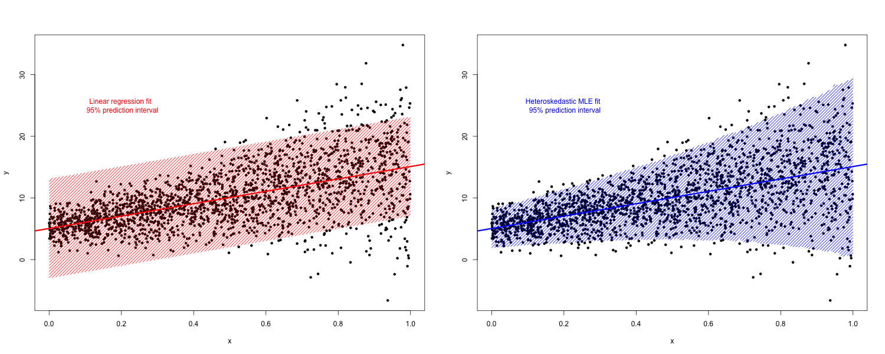
1.4 最大似然估计的理论与性质（略）
2 二值响应变量的logistic回归
2.1 二值数据（binary data）
1992年美国大选民调数据，对于选民i，如果 \(y_i=1\) ，那么他会选布什，如果 \(y_i=0\) ，那么他会选克林顿，通过收入（5个收入等级）来预测选民的政治偏好。
政治偏好 收入等级1 收入等级2 收入等级3 收入等级4 收入等级5 克林顿 98 138 222 208 36 布什 30 69 144 196 38 选布什的几率 0.31 0.50 0.65 0.94 1.06 相比收入等级1的风险 1.00 1.42 1.68 2.07 2.19 - 几率（odds）、几率比（odds ratios）和相对风险（relative risk）
- 几率，也叫胜率、优势、比率，表示随机事件发生的概率与不发生的概率之比，其取值范围是零到正无穷。 \[\omega_i \equiv Odds(y_i =1 ) = \frac{Pr(y_i =1 ) }{1-(y_i =1 ) } \]
- 相对风险，也叫风险比，表示两个随机事件概率的比值，与几率不同，这两个随机事件不存在互补的关系。
- 上表显示，收入等级1的选民选布什的几率为0.31；收入等级2的选民选布什的几率为0.51，与收入等级1的选民相对风险为1.42，即收入等级2的选民选择布什的概率比收入等级1的选民要高42%；并且随着收入等级上升，选择布什的几率上升，最终在收入等级5达到1.06，即选择布什概率反超选择克林顿的概率。
- 几率比即几率的比值，也叫优势比、比数比等。例如，收入等级2与等级1的选民选择布什的几率比为0.50/0.31=1.61，即收入等级2的选民选择布什的几率是收入等级1的选民的1.61倍。
2.2 线性概率模型（LPM）
- 线性概率模型：\(P(y_i =1) = \beta_0 + \beta_1 income_i + \beta_2 age_i + \beta_3 age_i^2 + \beta_4 black_i + \epsilon_i \)
load("nescleaned.RData") nes <- data[data$year==1992 & data$presvote<3,] nes$presvote <- nes$presvote - 1 lm.fit <- lm(presvote ~ income + age + I(age^2) + black, data = nes) summary(lm.fit)
Call:
lm(formula = presvote ~ income
age
I(age^2)
black, data = nes)
Residuals:
Min 1Q Median 3Q Max
-0.6236 -0.4477 -0.1185 0.5050 1.0105
Coefficients:
Estimate Std. Error t value Pr(>|t|)
(Intercept) 4.496e-01 1.169e-01 3.845 0.000127 ***
income 6.896e-02 1.348e-02 5.115 3.67e-07 ***
age -9.737e-03 5.053e-03 -1.927 0.054219 .
I(age^2) 1.004e-04 4.927e-05 2.038 0.041800 *
black -3.778e-01 4.051e-02 -9.326 < 2e-16 ***
---
Signif. codes: 0 ‘***’ 0.001 ‘**’ 0.01 ‘*’ 0.05 ‘.’ 0.1 ‘ ’ 1
Residual standard error: 0.4666 on 1174 degrees of freedom
(368 observations deleted due to missingness)
Multiple R-squared: 0.1001, Adjusted R-squared: 0.09707
F-statistic: 32.66 on 4 and 1174 DF, p-value: < 2.2e-16
- 线性概率模型诊断
- 概率预测值可能会超出[0, 1]的范围，做出无意义的预测。并且预测值中无意义的值越多，参数估计偏差越大。
- 假定协变量与概率的关系是固定的，即回归系数是固定值。
- 残差一定会存在异方差，导致参数估计的置信区间是有偏的。
par(mfrow=c(1,3)) plot(fitted(lm.fit), lm.fit$model$presvote, xlim = c(-0.2,1), xlab = "predicted", ylab = "actual") abline(v=c(0,1), col="red",lty=3,lwd=2) plot(fitted(lm.fit), resid(lm.fit), xlab = "fitted values", ylab = "residuals") library(car) qqPlot(lm.fit)
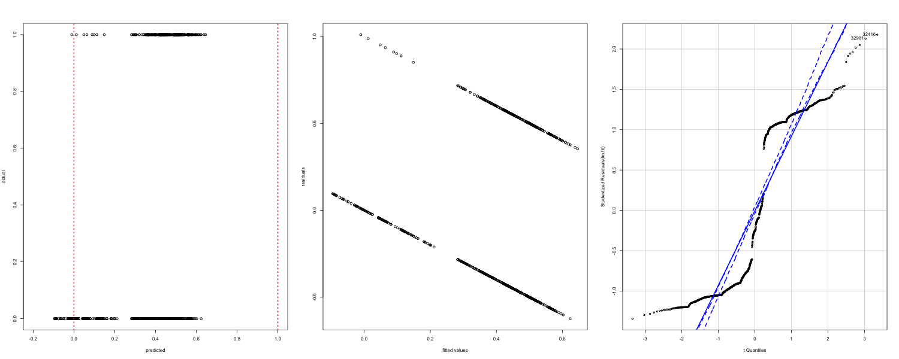
继续使用线性概率模型（特别是经济学）的理由：
- 政策评价中，如果刺激是随机分配的并且只需要关注平均处理效应，刺激一般是二值变量，尽管OLS的回归系数代表刺激引起的概率变化，而logit模型的回归系数代表刺激起来的几率比的变化，但是OLS与logit模型给出的结果本质是一样的，函数形式对估计结果没有影响（Angrist and Pischke, 2009）。
# compare linear probability model with logit model lm.fit.black <- lm(presvote ~ black, data = nes) summary(lm.fit.black) glm.fit.black <- glm(presvote ~ black, family = binomial(link="logit"),data = nes) summary(glm.fit.black) odds0 <- exp(coef(glm.fit.black)[1]) (p0 <- odds0/(1+odds0)) odds1 <- exp(coef(glm.fit.black)[1]+coef(glm.fit.black)[2]) (p1 <- odds1/(1+odds1)) (p1-p0)
Call: lm(formula = presvote ~ black, data = nes) Residuals: Min 1Q Median 3Q Max -0.45890 -0.45890 -0.05096 0.54110 0.94904 Coefficients: Estimate Std. Error t value Pr(>|t|) (Intercept) 0.45890 0.01474 31.13 <2e-16 *** black -0.40795 0.04039 -10.10 <2e-16 *** --- Signif. codes: 0 ‘***’ 0.001 ‘**’ 0.01 ‘*’ 0.05 ‘.’ 0.1 ‘ ’ 1 Residual standard error: 0.4712 on 1177 degrees of freedom (368 observations deleted due to missingness) Multiple R-squared: 0.07975, Adjusted R-squared: 0.07896 F-statistic: 102 on 1 and 1177 DF, p-value: < 2.2e-16 Call: glm(formula = presvote ~ black, family = binomial(link = "logit"), data = nes) Deviance Residuals: Min 1Q Median 3Q Max -1.1083 -1.1083 -0.3234 1.2481 2.4400 Coefficients: Estimate Std. Error z value Pr(>|z|) (Intercept) -0.16476 0.06277 -2.625 0.00868 ** black -2.75975 0.36829 -7.493 6.71e-14 *** --- Signif. codes: 0 ‘***’ 0.001 ‘**’ 0.01 ‘*’ 0.05 ‘.’ 0.1 ‘ ’ 1 (Dispersion parameter for binomial family taken to be 1) Null deviance: 1591.2 on 1178 degrees of freedom Residual deviance: 1473.1 on 1177 degrees of freedom (368 observations deleted due to missingness) AIC: 1477.1 Number of Fisher Scoring iterations: 5 (Intercept) 0.4589041 (Intercept) 0.05095541 (Intercept) -0.4079487- 近来社会科学强调因果推断，推动了短面板的固定效应模型、工具变量方法的应用，这些方法都更容易在OLS的框架下实施。
- Heckman等（1997）严格证明了线性概率模型代表某种特定类别的随机效用模型，对决策者的效用是非对称随机施加的，即线性概率模型是具有理论基础的。
- 其他“理由”：观测量过大、相比logit易于解释、OLS对分布的假定更为宽松。
- 但是因果推断只是拟合模型的目的之一，基于数据生成过程（data generation process, DGP）的模型比较和预测更倾向于使用logit或probit模型。
2.3 logit模型（logistic回归模型）的设定
- logit转换：将取值为[0, 1]的概率转换为无边界的实数 \[logit(p)=log(\frac{p}{1-p})\]
- logistic转换：logit的的反函数，将实数转换为取值范围为[0, 1]的概率 \[logit^{-1}(x)=\frac{e^x}{1+e^x}=\frac{1}{1+e^{-x}}\]
- 概率论中，二值结果的数据来自于伯努利试验（Bernoulli trials），随机变量\(Y_i\)服从参数为\(\theta_i\)的两点分布，模型分为系统与随机两部分：
- 随机部分： \[Y_i \sim f_B (y_i ; \theta_i ) \] 或者， \[Pr(Y_i = y_i ) = \theta_i^{Y_i }(1-\theta_i )^{1-y_i } = \begin{cases} \theta_i & \text{for } y_i = 1 \\ 1- \theta_i & \text{for } y_i = 0 \end{cases} \]
- 系统部分： \[\theta_i \equiv logit_{-1}(x_i^T \beta)=\frac{1}{1+e^{-x_i^T \beta}}\]
- 给定模型的系统与随机部分，可知数据的联合分布： \[Pr(y|\theta)= \prod_{i=1}^{n} \theta_i^{y_i}(1-\theta_i )^{1-y_i } \]
- 带入系统部分整理后，可得对数似然函数： \[logL(\theta |y) = \sum_{i=1}^n log(\frac{e^{-x_i^T \beta (1-y_i )}}{1+e^{-x_i^T \beta}})\]
2.4 logit模型参数估计
自编对数似然函数进行模型最大似然估计
# 最大似然法拟合 # 准备数据 mledata <- nes[,c("presvote","income")] mledata <- na.omit(mledata) xcovariates <- mledata$income response <- mledata$presvote # 设置参数初始值beta0,beta1 stval <- c(0,0) # 设定似然函数 llk.hettheta <- function(param,y,x) { x <- as.matrix(x) x <- cbind(1,x) b <- param[ 1 : ncol(x) ] xb <- x%*%b sum(xb*(1-y)+log(1+exp(-xb))) # optim是最小化函数，所以公式要乘以-1 } # 运行优化函数得到拟合结果 mle.fit <- optim(stval,llk.hettheta,method="BFGS",hessian=T,y=response,x=xcovariates) # 提取估计值 pe <- mle.fit$par # 参数的点估计 vc <- solve(mle.fit$hessian) # 协方差矩阵 se <- sqrt(diag(vc)) # 标准误 z <- mle.fit$par/se # z值 p.z <- 2* (1 - pnorm(abs(z))) # p值 AIC <- 2*mle.fit$value + 2*length(mle.fit$par) out.table <- data.frame(Coefs=c("beta0","beta1"), Est=mle.fit$par, SE=se, Z=z, pval=p.z) print(out.table, digits=2) print(paste("Deviance:", round(2*mle.fit$value, digits = 1), " AIC:", round(AIC, digits = 1)))
Coefs Est SE Z pval 1 beta0 -1.40 0.189 -7.4 1.4e-13 2 beta1 0.33 0.057 5.7 1.0e-08 [1] "Deviance: 1556.9 AIC: 1560.9"
采用glm函数进行估计
glm.fit <- glm(presvote ~ income, family = binomial(link="logit"),data = nes) summary(glm.fit)
Call: glm(formula = presvote ~ income, family = binomial(link = "logit"), data = nes) Deviance Residuals: Min 1Q Median 3Q Max -1.2756 -1.0034 -0.8796 1.2194 1.6550 Coefficients: Estimate Std. Error z value Pr(>|z|) (Intercept) -1.40213 0.18946 -7.401 1.35e-13 *** income 0.32599 0.05688 5.731 9.97e-09 *** --- Signif. codes: 0 ‘***’ 0.001 ‘**’ 0.01 ‘*’ 0.05 ‘.’ 0.1 ‘ ’ 1 (Dispersion parameter for binomial family taken to be 1) Null deviance: 1591.2 on 1178 degrees of freedom Residual deviance: 1556.9 on 1177 degrees of freedom (368 observations deleted due to missingness) AIC: 1560.9 Number of Fisher Scoring iterations: 4
2.5 logit模型结果的呈现
# 定义logit反函数 invlogit <- function(x){ p <- exp(x)/(1+exp(x)) return(p) } par(mfrow=c(1,2)) curve (invlogit(glm.fit$coef[1] + glm.fit$coef[2]*x), 1, 5, ylim=c(-.01,1.01), xlim=c(-2, 8), xaxt="n", xaxs="i", mgp=c(2,.5,0), ylab="Pr (Republican vote)", xlab="Income", lwd=4) curve (invlogit(glm.fit$coef[1] + glm.fit$coef[2]*x), -2, 8, lwd=.5, add=T) axis (1, 1:5, mgp=c(2,.5,0)) mtext ("(poor)", 1, 1.5, at=1, adj=.5) mtext ("(rich)", 1, 1.5, at=5, adj=.5) points (jitter(glm.fit$data$income, .5), jitter(glm.fit$data$presvote, .08), pch=20, cex=.1) ##模拟回归系数的函数 sim <- function(fit, n.sims=100) { summ <- summary (fit, correlation=TRUE, dispersion = fit$dispersion) coef <- summ$coef[,1:2,drop=FALSE] dimnames(coef)[[2]] <- c("coef.est","coef.sd") beta.hat <- coef[,1,drop=FALSE] sd.beta <- coef[,2,drop=FALSE] corr.beta <- summ$corr n <- summ$df[1] + summ$df[2] k <- summ$df[1] # 获取回归系数的协方差矩阵 V.beta <- corr.beta * array(sd.beta,c(k,k)) * t(array(sd.beta,c(k,k))) # 以估计的参数构建多元正态分布，并从中抽取模拟的参数 library(MASS) beta <- MASS::mvrnorm (n.sims, beta.hat, V.beta) sigma <- rep (sqrt(summ$dispersion), n.sims) ans <- list(coef = beta, sigma = sigma) return(ans) } sim.1 <- sim(glm.fit) curve (invlogit(glm.fit$coef[1] + glm.fit$coef[2]*x), -2, 8, ylim=c(-.01,1.01), xlim=c(-2,8), xaxt="n", xaxs="i", mgp=c(2,.5,0), ylab="Pr (Republican vote)", xlab="Income", lwd=1) for (j in 1:20){ curve (invlogit(sim.1$coef[j,1] + sim.1$coef[j,2]*x), 1, 5, col="red", lwd=.5, add=T) } #curve (invlogit(glm.fit$coef[1] + glm.fit$coef[2]*x), add=T) axis (1, 1:5, mgp=c(2,.5,0)) mtext ("(poor)", 1, 1.5, at=1, adj=.5) mtext ("(rich)", 1, 1.5, at=5, adj=.5) points (jitter(glm.fit$data$income, .5), jitter(glm.fit$data$presvote, .08), pch=20, cex=.1)
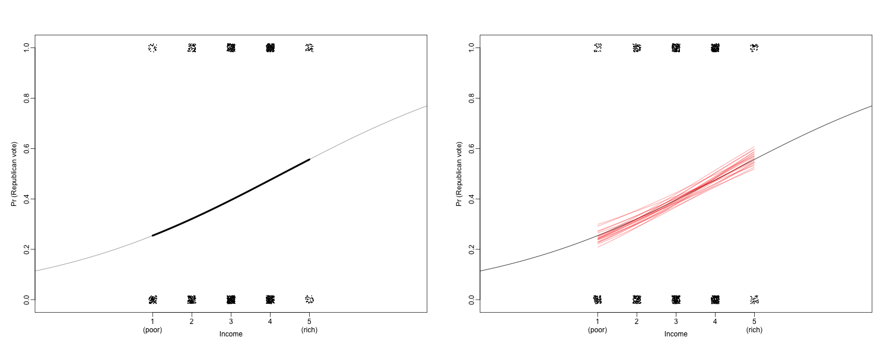
2.6 logistic回归系数的解释
- 用glm拟合多个自变量的模型（包括收入、年龄、年龄二次项、是否为黑人）并与其他模型比较
glm.fit1 <- glm(presvote ~ income+age+I(age^2)+black, family = binomial(link="logit"),data = nes) library(stargazer) stargazer(lm.fit.black, glm.fit.black, glm.fit, lm.fit, glm.fit1, type = "text")
Please cite as:
Hlavac, Marek (2018). stargazer: Well-Formatted Regression and Summary Statistics Tables.
R package version 5.2.2. https://CRAN.R-project.org/package=stargazer
====================================================================================================
Dependent variable:
--------------------------------------------------------------------------------
presvote
OLS logistic OLS logistic
(1) (2) (3) (4) (5)
----------------------------------------------------------------------------------------------------
black -0.408*** -2.760*** -0.378*** -2.668***
(0.040) (0.368) (0.041) (0.370)
income 0.326*** 0.069*** 0.326***
(0.057) (0.013) (0.064)
age -0.010* -0.047**
(0.005) (0.024)
I(age2) 0.0001** 0.0005**
(0.00005) (0.0002)
Constant 0.459*** -0.165*** -1.402*** 0.450*** -0.195
(0.015) (0.063) (0.189) (0.117) (0.542)
----------------------------------------------------------------------------------------------------
Observations 1,179 1,179 1,179 1,179 1,179
R2 0.080 0.100
Adjusted R2 0.079 0.097
Log Likelihood -736.548 -778.458 -723.028
Akaike Inf. Crit. 1,477.095 1,560.916 1,456.056
Residual Std. Error 0.471 (df = 1177) 0.467 (df = 1174)
F Statistic 101.994*** (df = 1; 1177) 32.662*** (df = 4; 1174)
====================================================================================================
Note: *p<0.1; **p<0.05; ***p<0.01
- logit与OLS估计量的符号与p值都是相似的，但是系数解释更为复杂。
- 因为模型是非线性的，自变量对因变量的效应不再是恒定的。logit反函数是曲线形式的，因此对于x的变化，y的变化不会是常量。
- \(logit^{-1}(0)=0.5\), \(logit^{-1}(0.4)=0.6\)，意味着logit值从0增加到0.4，相应的概率从50%增加到60%，增加了10%。
- \(logit^{-1}(2.2)=0.9\) , \(logit^{-1}(2.6)=0.93\) ，则意味着logit值从2.2增加2.6，同样增加0.4，而相应的概率从90%增加到93%，只增加了3%。
- logit模型的边际效应显示自变量\(x_k\)变化所引起的因变量变化不仅与其回归系数\(\beta_k\)相关，还取决于所有协变量的值。一般针对变量类型，根据数据均值、中位数、众数进行评价。
\[\frac{\partial E[Y_i ]}{\partial x_{ki}} = \frac{\partial \theta_i }{\partial x_{ki}} = \beta_k \frac{exp(x_i^T \beta)}{(1+exp(x_i^T \beta))^2} \]
以第3个模型为例，解释回归系数。 \[Pr(支持布什)=logit^{-1}(-1.4+0.33\cdot income)\]
invlogit(-1.40 + 0.33*median(nes$income, na.rm=T))
[1] 0.3989121
- 具有中位数收入等级的选民支持布什的概率为39.9%
- 收入等级从3变化到2所产生的概率变化 \[logit^{-1}(-1.4+0.33\cdot 3)-logit^{-1}(-1.4+0.33\cdot 2)=0.08\]
- 还可以计算logit反函数曲线在中心值处的斜率，作为边际效应的代表。 \[logit^{-1}(\alpha +\beta x)的导数: \frac{\beta e^{\alpha +\beta x}}{(1+e^{\alpha +\beta x})^2}，带入\bar{x}=3.1，得到\frac{0.33e^{-0.39}}{(1+e^{-0.39})^2}=0.13 \]
- 除4法则：logit反函数曲线在中心位置斜率最大，此时 \(\alpha +\beta x=0\)，因此\(logit^{-1}(\alpha +\beta x)=0.5\) ，并且函数的导数也在此点最大，且为 \(\beta e^0 /(1+e^0)^2=\beta /4\) ，它是收入改变1个单位引起概率变化的最大值。
2.7 展示多个logistic回归的结果
- 采用1952-2000年的13届选前民调回归，收入系数的估计值 \(\pm 1\) 标准差，显示高收入选民更支持共和党，但是这种关系随着时间的推移越来越强。
income.year <- NULL income.coef <- NULL income.se <- NULL for (yr in seq(1952,2000,4)){ ok <- data$year==yr & data$presvote<3 vote <- data$presvote[ok] - 1 income <- data$income[ok] fit.1 <- glm (vote ~ income, family=binomial(link="logit")) income.year <- c (income.year, yr) summ <- summary(fit.1) income.coef <- c (income.coef, fit.1$coef[2]) income.se <- c (income.se, summ$coefficients[2,2]) } plot (income.year, income.coef, xlim=c(1950,2000), ylim=range(income.coef+income.se, income.coef-income.se), mgp=c(2,.5,0), pch=20, ylab="Coefficient of income", xlab="Year") for (i in 1:length(income.year)){ lines (rep(income.year[i],2), income.coef[i]+income.se[i]*c(-1,1), lwd=.5) } abline (0,0,lwd=.5, lty=2)
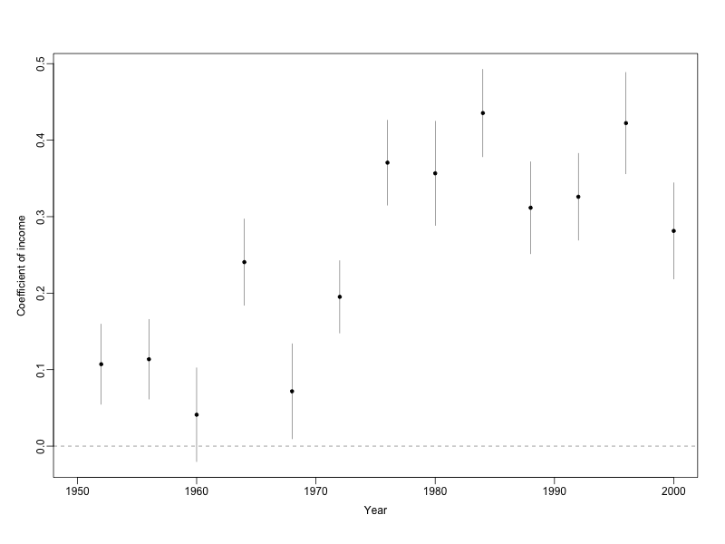
2.8 利用潜在变量构建回归模型
\[\begin{equation} y_i= \begin{cases} 1 & \text{if } z_i >0 \\ 0 & \text{if } z_i <0 \end{cases}\\ z_i=X_i\beta+\epsilon_i \end{equation}\] 其中独立误差项 \(\epsilon_i\) 具有logistic概率分布， \(Pr(\epsilon_i < x)=logit^{-1}(x)\) \[Pr(y_i=1)=Pr(z_i>0)=Pr(\epsilon_i>-X_i\beta)=logit^{-1}(X_i\beta)\] 潜在变量也可以解释为选民的对布什的“效用”和偏好。 潜在变量可以用正态回归模型近似 \(z_i=X_i\beta+\epsilon_i , ~ \epsilon_i \sim N(0,\sigma^2) ~ with~ \sigma=1.6\)，由于潜在变量符号与大小无关，因此无法估计 \(\epsilon\)
curve(dlogis(x,location = -1.07),-9,7,yaxs='i') polygon(x=c(0,seq(0,7,0.01),7),y=c(0,dlogis(seq(0,7,0.01),location = -1.07),0),col = "gray")
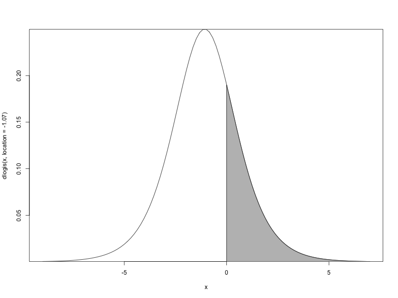
3 logistic回归示例
3.1 孟加拉居民水井砷污染 数据
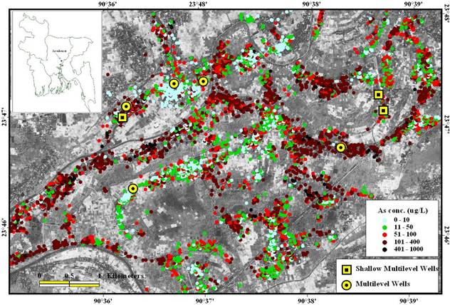
- 分析居民改换饮用水井的行为
\(y_i=1\) 居民改换新的饮用水井; \(y_i=0\) 居民继续用自家的井. 输入变量
- 常数项
- 离最近安全水井的距离（米）
- 自家井水中的砷浓度水平
- 家庭成员是否积极参与社区组织
- 户主的教育水平
- 单预测变量logistic回归
wells <- read.table ("wells.dat") attach(wells) fit.1 <- glm (switch ~ dist, family=binomial(link="logit")) summary (fit.1)
Call: glm(formula = switch ~ dist, family = binomial(link = "logit")) Deviance Residuals: Min 1Q Median 3Q Max -1.4406 -1.3058 0.9669 1.0308 1.6603 Coefficients: Estimate Std. Error z value Pr(>|z|) (Intercept) 0.6059594 0.0603102 10.047 < 2e-16 *** dist -0.0062188 0.0009743 -6.383 1.74e-10 *** --- Signif. codes: 0 ‘***’ 0.001 ‘**’ 0.01 ‘*’ 0.05 ‘.’ 0.1 ‘ ’ 1 (Dispersion parameter for binomial family taken to be 1) Null deviance: 4118.1 on 3019 degrees of freedom Residual deviance: 4076.2 on 3018 degrees of freedom AIC: 4080.2 Number of Fisher Scoring iterations: 4- 改变预测变量的单位（以100米为单位）
dist100 <- dist/100 fit.2 <- glm (switch ~ dist100, family=binomial(link="logit")) summary(fit.2)
Call: glm(formula = switch ~ dist100, family = binomial(link = "logit")) Deviance Residuals: Min 1Q Median 3Q Max -1.4406 -1.3058 0.9669 1.0308 1.6603 Coefficients: Estimate Std. Error z value Pr(>|z|) (Intercept) 0.60596 0.06031 10.047 < 2e-16 *** dist100 -0.62188 0.09743 -6.383 1.74e-10 *** --- Signif. codes: 0 ‘***’ 0.001 ‘**’ 0.01 ‘*’ 0.05 ‘.’ 0.1 ‘ ’ 1 (Dispersion parameter for binomial family taken to be 1) Null deviance: 4118.1 on 3019 degrees of freedom Residual deviance: 4076.2 on 3018 degrees of freedom AIC: 4080.2 Number of Fisher Scoring iterations: 4- 绘制拟合模型
invlogit <- function(x){ p <- exp(x)/(1+exp(x)) return(p) } jitter.binary <- function(a, jitt=.05){ ifelse (a==0, runif (length(a), 0, jitt), runif (length(a), 1-jitt, 1)) } switch.jitter <- jitter.binary(switch) plot(dist, switch.jitter, xlab="Distance (in meters) to nearest safe well", ylab="Pr (switching)", type="n", xaxs="i", yaxs="i", mgp=c(2,.5,0)) curve (invlogit(coef(fit.1)[1]+coef(fit.1)[2]*x), lwd=1, add=TRUE) points (dist, jitter.binary(switch), pch=20, cex=.1)
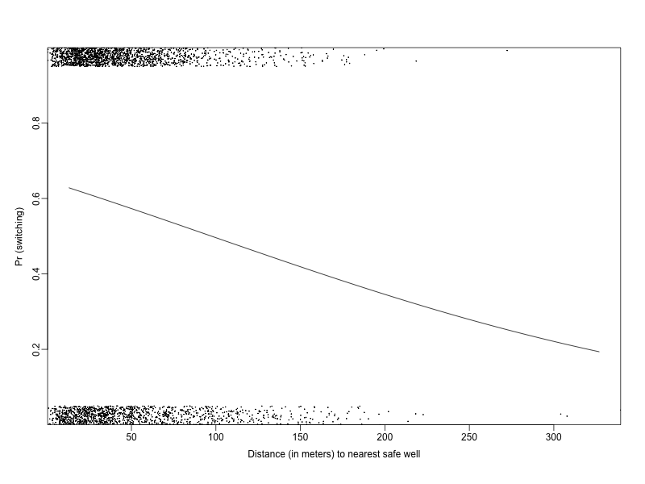
- 解释logistic回归的系数
\[Pr(switch)=logit^{-1}(0.61-0.62\cdot dist100)\]
- 常数项：当 \(dist100=0\) 时，换水井的概率为 \(logit^{-1}(0.61)=0.65\)
- 在距离的平均值处预测距离增加引起的概率变化，以100米为单位的距离平均值为0.48，此处线性预测部分为 \(0.61-0.62\cdot 0.48=0.31\) ，此处的曲线斜率为 \(-0.62e^{0.31}/(1+e^{0.31})^2=-0.15\) ，即距安全饮用水井距离增加100米，换水井的概率下降15%
- 更快的方法：除4法则 \(-0.62/4=-0.15\)
- 标准差为0.10，95%的置信区间[-0.82, -0.42]
- 增加第二个变量（砷的浓度水平）
fit.3 <- glm (switch ~ dist100 + arsenic, family=binomial(link="logit")) summary(fit.3) par(mfrow=c(1,2)) plot(dist, switch.jitter, xlim=c(0,max(dist)), xlab="Distance (in meters) to nearest safe well", ylab="Pr (switching)", type="n", xaxs="i", yaxs="i", mgp=c(2,.5,0)) curve (invlogit(cbind (1, x/100, .5) %*% coef(fit.3)), lwd=.5, add=TRUE) curve (invlogit(cbind (1, x/100, 1.0) %*% coef(fit.3)), lwd=.5, add=TRUE) points (dist, jitter.binary(switch), pch=20, cex=.1) text (50, .27, "if As = 0.5", adj=0, cex=.8) text (75, .50, "if As = 1.0", adj=0, cex=.8) plot(arsenic, switch.jitter, xlim=c(0,max(arsenic)), xlab="Arsenic concentration in well water", ylab="Pr (switching)", type="n", xaxs="i", yaxs="i", mgp=c(2,.5,0)) curve (invlogit(cbind (1, 0, x) %*% coef(fit.3)), lwd=.5, add=TRUE) curve (invlogit(cbind (1, 0.5, x) %*% coef(fit.3)), lwd=.5, add=TRUE) points (arsenic, jitter.binary(switch), pch=20, cex=.1) text (1.5, .78, "if dist = 0", adj=0, cex=.8) text (2.2, .6, "if dist = 50", adj=0, cex=.8)
- 如何解释和比较两个自变量的系数
- 除4法则
- 距离和浓度哪个变量影响更大？
- 距离的标准差为0.38，增加1个标准差单位的距离产生的概率变化 \(-0.90\cdot 0.38/4=-8\%\)
- 浓度的标准差为1.10，增加1个标准差单位的浓度产生的概率变化 \(0.46\cdot 1.10/4=13\%\)
加入浓度变量后，距离的系数由-0.62变为-0.90，因为离安全饮用水井较远的井的砷浓度也更高。（考虑增加交互项）
- 含交互项的logistic回归
fit.4 <- glm (switch ~ dist100 + arsenic + dist100:arsenic, family=binomial(link="logit")) summary(fit.4)
Call: glm(formula = switch ~ dist100 arsenic dist100:arsenic, family = binomial(link = "logit")) Deviance Residuals: Min 1Q Median 3Q Max -2.7823 -1.2004 0.7696 1.0816 1.8476 Coefficients: Estimate Std. Error z value Pr(>|z|) (Intercept) -0.14787 0.11754 -1.258 0.20838 dist100 -0.57722 0.20918 -2.759 0.00579 ** arsenic 0.55598 0.06932 8.021 1.05e-15 *** dist100:arsenic -0.17891 0.10233 -1.748 0.08040 . --- Signif. codes: 0 ‘***’ 0.001 ‘**’ 0.01 ‘*’ 0.05 ‘.’ 0.1 ‘ ’ 1 (Dispersion parameter for binomial family taken to be 1) Null deviance: 4118.1 on 3019 degrees of freedom Residual deviance: 3927.6 on 3016 degrees of freedom AIC: 3935.6 Number of Fisher Scoring iterations: 4- 解释系数
- 常数项：impossible! 采用距离均值0.48和浓度均值1.66可得 \(logit^{-1}(-0.15-0.58\cdot 0.48+0.56\cdot 1.66-0.18\cdot 0.48\cdot 1.66)=0.59\)
- 距离的系数：采用浓度取均值1.66时计算为 \(-0.58-0.18\cdot 1.66=-0.88\) ，然后 \(-0.88/4=-0.22\)
- 浓度的系数：可以用距离为0时解释，但是更常用平均距离
浓度的系数为 \((0.56-0.18\cdot 0.48)/4=0.12\)
- 交互项的系数：浓度每增加1个单位，距离的系数增加-0.18
- 解释系数
- 变量中心化后再拟合
c.dist100 <- dist100 - mean (dist100) c.arsenic <- arsenic - mean (arsenic) fit.5 <- glm (switch ~ c.dist100 + c.arsenic + c.dist100:c.arsenic, family=binomial(link="logit")) summary(fit.5)
Call: glm(formula = switch ~ c.dist100 c.arsenic c.dist100:c.arsenic, family = binomial(link = "logit")) Deviance Residuals: Min 1Q Median 3Q Max -2.7823 -1.2004 0.7696 1.0816 1.8476 Coefficients: Estimate Std. Error z value Pr(>|z|) (Intercept) 0.35109 0.03985 8.810 <2e-16 *** c.dist100 -0.87365 0.10480 -8.337 <2e-16 *** c.arsenic 0.46951 0.04207 11.159 <2e-16 *** c.dist100:c.arsenic -0.17891 0.10233 -1.748 0.0804 . --- Signif. codes: 0 ‘***’ 0.001 ‘**’ 0.01 ‘*’ 0.05 ‘.’ 0.1 ‘ ’ 1 (Dispersion parameter for binomial family taken to be 1) Null deviance: 4118.1 on 3019 degrees of freedom Residual deviance: 3927.6 on 3016 degrees of freedom AIC: 3935.6 Number of Fisher Scoring iterations: 4试解释各项系数
- 变量中心化便于直观地解释系数
- 交互项的显著性不强，但方向符合预期，保留。
- 含有交互项模型示意图
par(mfrow=c(1,2)) plot(dist, switch.jitter, xlim=c(0,max(dist)), xlab="Distance (in meters) to nearest safe well", ylab="Pr (switching)", type="n", xaxs="i", yaxs="i", mgp=c(2,.5,0)) curve (invlogit(cbind (1, x/100, .5, .5*x/100) %*% coef(fit.4)), lwd=.5, add=TRUE) curve (invlogit(cbind (1, x/100, 1.0, 1.0*x/100) %*% coef(fit.4)), lwd=.5, add=TRUE) points (dist, jitter.binary(switch), pch=20, cex=.1) text (50, .37, "if As = 0.5", adj=0, cex=.8) text (75, .50, "if As = 1.0", adj=0, cex=.8) plot(arsenic, switch.jitter, xlim=c(0,max(arsenic)), xlab="Arsenic concentration in well water", ylab="Pr (switching)", type="n", xaxs="i", yaxs="i", mgp=c(2,.5,0)) curve (invlogit(cbind (1, 0, x, 0*x) %*% coef(fit.4)), lwd=.5, add=TRUE) curve (invlogit(cbind (1, 0.5, x, 0.5*x) %*% coef(fit.4)), lwd=.5, add=TRUE) points (arsenic, jitter.binary(switch), pch=20, cex=.1) text (1.5, .8, "if dist = 0", adj=0, cex=.8) text (2.2, .6, "if dist = 50", adj=0, cex=.8)
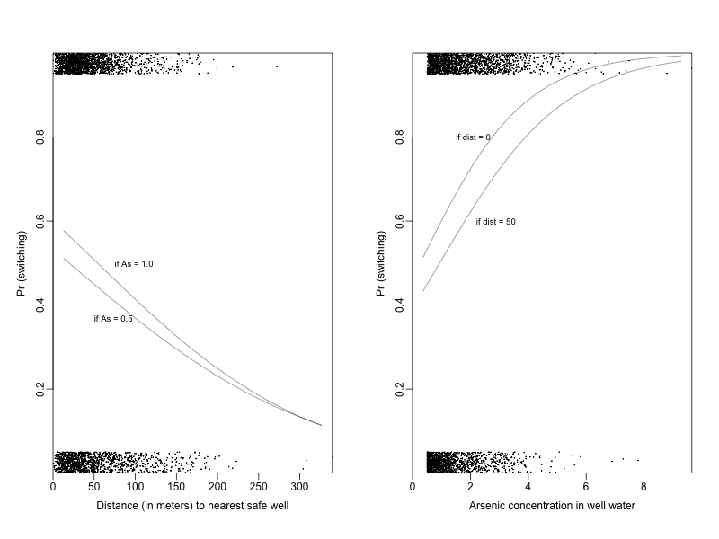
- 增加社会性变量
社会联系更紧密或者教育程度更高的居民是否会更倾向于改换饮用水井？
如果家庭成员加入了任何社区组织，那么assoc=1；educ是户主的教育年限，为了便于解释系数，实际采用educ4=edu/4
educ4 <- educ/4 fit.6 <- glm (switch ~ c.dist100 + c.arsenic + c.dist100:c.arsenic + assoc + educ4, family=binomial(link="logit")) summary(fit.6)
Call: glm(formula = switch ~ c.dist100 c.arsenic c.dist100:c.arsenic assoc educ4, family = binomial(link = "logit")) Deviance Residuals: Min 1Q Median 3Q Max -2.7303 -1.1892 0.7444 1.0675 1.6987 Coefficients: Estimate Std. Error z value Pr(>|z|) (Intercept) 0.20252 0.06930 2.922 0.00347 ** c.dist100 -0.87528 0.10507 -8.330 < 2e-16 *** c.arsenic 0.47531 0.04229 11.238 < 2e-16 *** assoc -0.12319 0.07698 -1.600 0.10953 educ4 0.16779 0.03838 4.372 1.23e-05 *** c.dist100:c.arsenic -0.16123 0.10225 -1.577 0.11482 --- Signif. codes: 0 ‘***’ 0.001 ‘**’ 0.01 ‘*’ 0.05 ‘.’ 0.1 ‘ ’ 1 (Dispersion parameter for binomial family taken to be 1) Null deviance: 4118.1 on 3019 degrees of freedom Residual deviance: 3905.4 on 3014 degrees of freedom AIC: 3917.4 Number of Fisher Scoring iterations: 4解释系数，决定在模型中的变量取舍？
- 拟合新的模型
fit.7 <- glm (switch ~ c.dist100 + c.arsenic + c.dist100:c.arsenic + educ4, family=binomial(link="logit")) summary(fit.7)
Call: glm(formula = switch ~ c.dist100 c.arsenic c.dist100:c.arsenic educ4, family = binomial(link = "logit")) Deviance Residuals: Min 1Q Median 3Q Max -2.7149 -1.1886 0.7478 1.0689 1.7223 Coefficients: Estimate Std. Error z value Pr(>|z|) (Intercept) 0.14844 0.06044 2.456 0.0141 * c.dist100 -0.87462 0.10510 -8.322 < 2e-16 *** c.arsenic 0.47663 0.04228 11.273 < 2e-16 *** educ4 0.16922 0.03833 4.415 1.01e-05 *** c.dist100:c.arsenic -0.16291 0.10235 -1.592 0.1115 --- Signif. codes: 0 ‘***’ 0.001 ‘**’ 0.01 ‘*’ 0.05 ‘.’ 0.1 ‘ ’ 1 (Dispersion parameter for binomial family taken to be 1) Null deviance: 4118.1 on 3019 degrees of freedom Residual deviance: 3907.9 on 3015 degrees of freedom AIC: 3917.9 Number of Fisher Scoring iterations: 4如果主效应较大，还要考虑增加交互项
c.educ4 <- educ4 - mean(educ4) fit.8 <- glm (switch ~ c.dist100 + c.arsenic + c.educ4 + c.dist100:c.arsenic + c.dist100:c.educ4 + c.arsenic:c.educ4, family=binomial(link="logit")) summary(fit.8)
Call: glm(formula = switch ~ c.dist100 c.arsenic c.educ4 c.dist100:c.arsenic c.dist100:c.educ4 c.arsenic:c.educ4, family = binomial(link = "logit")) Deviance Residuals: Min 1Q Median 3Q Max -2.5706 -1.1964 0.7314 1.0724 1.8712 Coefficients: Estimate Std. Error z value Pr(>|z|) (Intercept) 0.35630 0.04028 8.844 < 2e-16 *** c.dist100 -0.90286 0.10731 -8.414 < 2e-16 *** c.arsenic 0.49498 0.04305 11.497 < 2e-16 *** c.educ4 0.18498 0.03919 4.720 2.36e-06 *** c.dist100:c.arsenic -0.11768 0.10353 -1.137 0.25569 c.dist100:c.educ4 0.32269 0.10662 3.026 0.00247 ** c.arsenic:c.educ4 0.07223 0.04387 1.647 0.09965 . --- Signif. codes: 0 ‘***’ 0.001 ‘**’ 0.01 ‘*’ 0.05 ‘.’ 0.1 ‘ ’ 1 (Dispersion parameter for binomial family taken to be 1) Null deviance: 4118.1 on 3019 degrees of freedom Residual deviance: 3891.7 on 3013 degrees of freedom AIC: 3905.7 Number of Fisher Scoring iterations: 4解释交互项？
3.2 检查与比较拟合的logistic回归
- 残差与分箱残差
\[residual_i=y_i-E(y_i|X_i)=y_i-logit^{-1}(X_i\beta)\] 残差图提供不了有用的信息，因此采用拟合值将数据分到不同的类别（箱），然后绘制每个分箱的拟合值均值和残差均值
pred.8 <- fit.8$fitted.values plot(c(0,1), c(-1,1), xlab="Estimated Pr (switching)", ylab="Observed - estimated", type="n", main="Residual plot", mgp=c(2,.5,0)) abline (0,0, col="gray", lwd=.5) points (pred.8, switch-pred.8, pch=20, cex=.2)
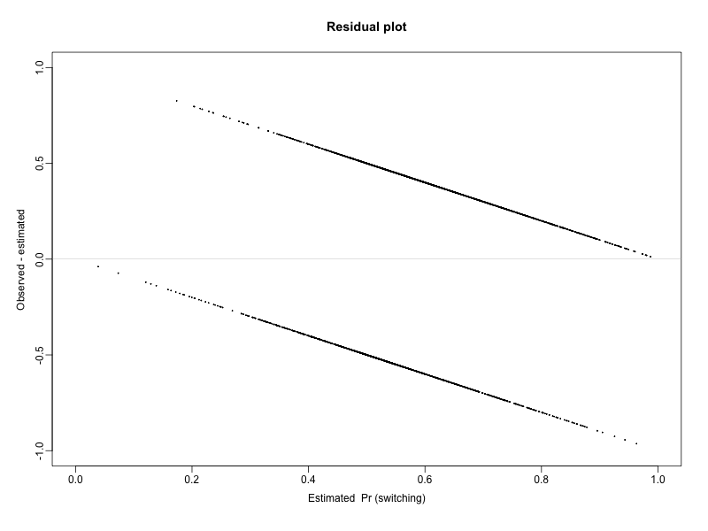
- 分箱残差图（Binned residual Plot）
## Defining binned residuals binned.resids <- function (x, y, nclass=sqrt(length(x))){ breaks.index <- floor(length(x)*(1:(nclass-1))/nclass) breaks <- c (-Inf, sort(x)[breaks.index], Inf) output <- NULL xbreaks <- NULL x.binned <- as.numeric (cut (x, breaks)) for (i in 1:nclass){ items <- (1:length(x))[x.binned==i] x.range <- range(x[items]) xbar <- mean(x[items]) ybar <- mean(y[items]) n <- length(items) sdev <- sd(y[items]) output <- rbind (output, c(xbar, ybar, n, x.range, 2*sdev/sqrt(n))) } colnames (output) <- c ("xbar", "ybar", "n", "x.lo", "x.hi", "2se") return (list (binned=output, xbreaks=xbreaks)) } ## Binned residuals vs. estimated probability of switching br.8 <- binned.resids (pred.8, switch-pred.8, nclass=40)$binned plot(range(br.8[,1]), range(br.8[,2],br.8[,6],-br.8[,6]), xlab="Estimated Pr (switching)", ylab="Average residual", type="n", main="Binned residual plot", mgp=c(2,.5,0)) abline (0,0, col="gray", lwd=.5) lines (br.8[,1], br.8[,6], col="gray", lwd=.5) lines (br.8[,1], -br.8[,6], col="gray", lwd=.5) points (br.8[,1], br.8[,2], pch=19, cex=.5)
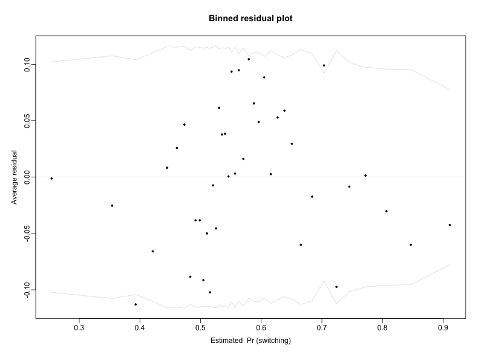
- 分箱残差与输入变量
- 距离-分箱残差图
br.dist <- binned.resids (dist, switch-pred.8, nclass=40)$binned plot(range(br.dist[,1]), range(br.dist[,2],br.dist[,6],-br.dist[,6]), xlab="Distance to nearest safe well", ylab="Average residual", type="n", main="Binned residual plot", mgp=c(2,.5,0)) abline (0,0, col="gray", lwd=.5) lines (br.dist[,1], br.dist[,6], col="gray", lwd=.5) lines (br.dist[,1], -br.dist[,6], col="gray", lwd=.5) points (br.dist[,1], br.dist[,2], pch=19, cex=.5)
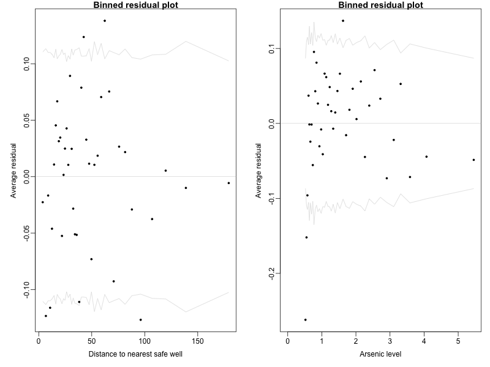
- 浓度-分箱残差图
br.arsenic <- binned.resids (arsenic, switch-pred.8, nclass=40)$binned plot(range(0,br.arsenic[,1]), range(br.arsenic[,2],br.arsenic[,6],-br.arsenic[,6]), xlab="Arsenic level", ylab="Average residual", type="n", main="Binned residual plot", mgp=c(2,.5,0)) abline (0,0, col="gray", lwd=.5) lines (br.arsenic[,1], br.arsenic[,6], col="gray", lwd=.5) lines (br.arsenic[,1], -br.arsenic[,6], col="gray", lwd=.5) points (br.arsenic[,1], br.arsenic[,2], pch=19, cex=.5)
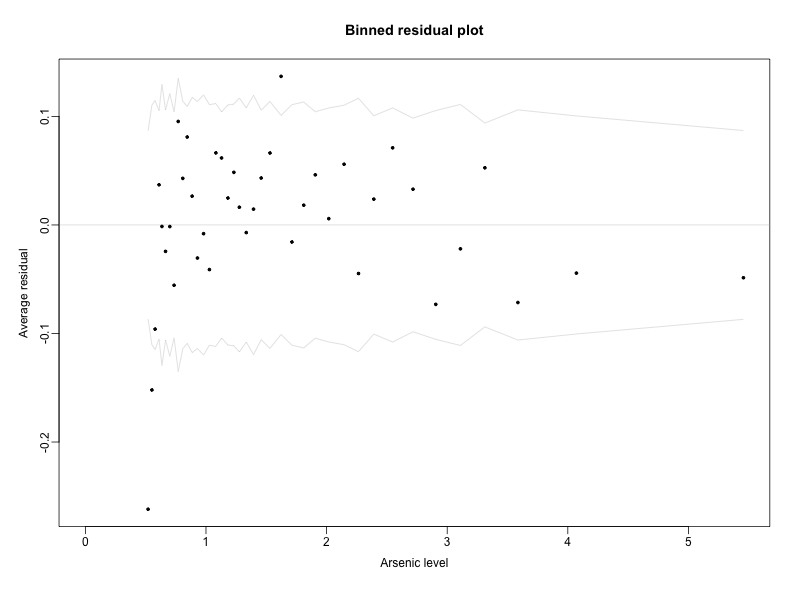
浓度与分箱残差图显示前3个分箱的残差均为较大的负值，说明预测值偏大，低浓度水井的居民不愿转换水井。
浓度与分箱残差图还显示中部的残差正值比较多，尾部的残差负值比较多，可考虑对数化。
- 对数变换
log.arsenic <- log (arsenic) c.log.arsenic <- log.arsenic - mean (log.arsenic) fit.9 <- glm (switch ~ c.dist100 + c.log.arsenic + c.educ4 + c.dist100:c.log.arsenic + c.dist100:c.educ4 + c.log.arsenic:c.educ4, family=binomial(link="logit")) summary(fit.9)
Call:
glm(formula = switch ~ c.dist100
c.log.arsenic
c.educ4
c.dist100:c.log.arsenic
c.dist100:c.educ4
c.log.arsenic:c.educ4,
family = binomial(link = "logit"))
Deviance Residuals:
Min 1Q Median 3Q Max
-2.1034 -1.1623 0.7178 1.0400 1.9229
Coefficients:
Estimate Std. Error z value Pr(>|z|)
(Intercept) 0.34517 0.04048 8.528 < 2e-16 ***
c.dist100 -0.97956 0.11120 -8.809 < 2e-16 ***
c.log.arsenic 0.90356 0.06951 12.999 < 2e-16 ***
c.educ4 0.17850 0.03900 4.577 4.71e-06 ***
c.dist100:c.log.arsenic -0.15670 0.18515 -0.846 0.39735
c.dist100:c.educ4 0.33843 0.10776 3.141 0.00169 **
c.log.arsenic:c.educ4 0.06011 0.07030 0.855 0.39257
---
Signif. codes: 0 ‘***’ 0.001 ‘**’ 0.01 ‘*’ 0.05 ‘.’ 0.1 ‘ ’ 1
(Dispersion parameter for binomial family taken to be 1)
Null deviance: 4118.1 on 3019 degrees of freedom
Residual deviance: 3863.1 on 3013 degrees of freedom
AIC: 3877.1
Number of Fisher Scoring iterations: 4
比较拟合的logistic回归
par(mfrow=c(1,2)) fit.9a <- glm (switch ~ dist100 + log.arsenic + educ4 + dist100:log.arsenic + dist100:educ4 + log.arsenic:educ4, family=binomial(link="logit")) ## Graph for log model fit.9a plot(arsenic, switch.jitter, xlim=c(0,max(arsenic)), xlab="Arsenic concentration in well water", ylab="Pr (switching)", type="n", xaxs="i", yaxs="i", mgp=c(2,.5,0)) curve (invlogit(coef(fit.9a)[1]+coef(fit.9a)[2]*0+coef(fit.9a)[3]*log(x)+coef(fit.9a)[4]*mean(educ4)+coef(fit.9a)[5]*0*log(x)+coef(fit.9a)[6]*0*mean(educ4)+coef(fit.9a)[7]*log(x)*mean(educ4)), from=.50, lwd=.5, add=TRUE) curve (invlogit(coef(fit.9a)[1]+coef(fit.9a)[2]*.5+coef(fit.9a)[3]*log(x)+coef(fit.9a)[4]*mean(educ4)+coef(fit.9a)[5]*.5*log(x)+coef(fit.9a)[6]*.5*mean(educ4)+coef(fit.9a)[7]*log(x)*mean(educ4)), from=.50, lwd=.5, add=TRUE) points (arsenic, jitter.binary(switch), pch=20, cex=.1) text (1.2, .8, "if dist = 0", adj=0, cex=.8) text (1.8, .6, "if dist = 50", adj=0, cex=.8) ## Graph of binned residuals for log model fit.9 pred.9 <- fit.9$fitted.values br.fit.9 <- binned.resids (arsenic, switch-pred.9, nclass=40)$binned plot(range(0,br.fit.9[,1]), range(br.fit.9[,2],br.fit.9[,6],-br.fit.9[,6]), xlab="Arsenic level", ylab="Average residual", type="n", main="Binned residual plot\nfor model with log (arsenic)", mgp=c(2,.5,0)) abline (0,0, col="gray", lwd=.5) lines (br.fit.9[,1], br.fit.9[,6], col="gray", lwd=.5) lines (br.fit.9[,1], -br.fit.9[,6], col="gray", lwd=.5) points (br.fit.9[,1], br.fit.9[,2], pch=19, cex=.5)
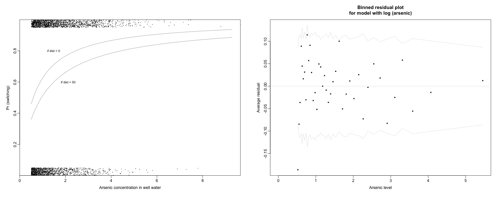
- 拟合曲线图相似，在低浓度区域更陡，高浓度区域更平缓。
- 分箱残差图比较正常，但仍然第1个分箱的残差明显偏低，可能存在0.5的心理阈值或测量误差。
3.3 评价logistic回归
错误率（error rate）
- 无模型错误率为42%（58%的居民改换水井，42%的居民没有改换），当前模型错误率为36%
- 错误率无法区分拟合值0.6和0.9之间的区别
error.rate <- mean((pred.9>0.5 & switch==0) | (pred.9<0.5 & switch==1))
error.rate
[1] 0.3649007
偏差（deviance）
- 偏差值来度量错误，值越低说明拟合度越好
- 如果在模型中加入一个随机噪声的预测变量，平均而言偏差值只会减少1
- 如果加入一个具有信息量的预测变量，偏差值的减少会大于1；加入k个变量，则偏差值减少大于k
- 偏差值可以类比于线性回归中的 \(R^2\) ，其值来自于-2乘以似然函数的对数，应用时比较相对值即可
比较之前拟合模型的偏差?
3.4 比较多个自变量的平均效应
采用一个简单的模型来演示
fit.10 <- glm (switch ~ dist100 + arsenic + educ4, family=binomial(link="logit")) summary(fit.10)
Call:
glm(formula = switch ~ dist100
arsenic
educ4, family = binomial(link = "logit"))
Deviance Residuals:
Min 1Q Median 3Q Max
-2.5768 -1.1968 0.7554 1.0635 1.6990
Coefficients:
Estimate Std. Error z value Pr(>|z|)
(Intercept) -0.21393 0.09311 -2.298 0.0216 *
dist100 -0.89564 0.10461 -8.562 < 2e-16 ***
arsenic 0.46836 0.04159 11.261 < 2e-16 ***
educ4 0.17128 0.03830 4.472 7.74e-06 ***
---
Signif. codes: 0 ‘***’ 0.001 ‘**’ 0.01 ‘*’ 0.05 ‘.’ 0.1 ‘ ’ 1
(Dispersion parameter for binomial family taken to be 1)
Null deviance: 4118.1 on 3019 degrees of freedom
Residual deviance: 3910.4 on 3016 degrees of freedom
AIC: 3918.4
Number of Fisher Scoring iterations: 4
比较距离安全饮用水井为0和100米的居民转换概率的平均预测差异 \[\delta(arsenic,educ4)=logit^{-1}(-0.21-0.90\cdot 1+0.47\cdot arsenic+0.17\cdot educ4)\\ -logit^{-1}(-0.21-0.90\cdot 0+0.47\cdot arsenic+0.17\cdot educ4)\] \[平均预测差异=\frac{1}{n}\sum_{i=1}^n \delta (arsenic_i,educ4_i)\] 结果为-0.20，现有数据而言，在砷浓度与教育水平相等的情况下，距安全饮用水井100米的居民比紧邻安全饮用水井的居民改换水井的概率平均要低20%.
含有交互项的模型的平均预测差异
fit.11 <- glm (switch ~ dist100 + arsenic + educ4 + dist100:arsenic, family=binomial(link="logit")) summary(fit.11)
Call:
glm(formula = switch ~ dist100
arsenic
educ4
dist100:arsenic,
family = binomial(link = "logit"))
Deviance Residuals:
Min 1Q Median 3Q Max
-2.7149 -1.1886 0.7478 1.0689 1.7223
Coefficients:
Estimate Std. Error z value Pr(>|z|)
(Intercept) -0.34904 0.12636 -2.762 0.00574 **
dist100 -0.60470 0.20949 -2.886 0.00390 **
arsenic 0.55537 0.06953 7.987 1.38e-15 ***
educ4 0.16922 0.03833 4.415 1.01e-05 ***
dist100:arsenic -0.16291 0.10235 -1.592 0.11145
---
Signif. codes: 0 ‘***’ 0.001 ‘**’ 0.01 ‘*’ 0.05 ‘.’ 0.1 ‘ ’ 1
(Dispersion parameter for binomial family taken to be 1)
Null deviance: 4118.1 on 3019 degrees of freedom
Residual deviance: 3907.9 on 3015 degrees of freedom
AIC: 3917.9
Number of Fisher Scoring iterations: 4
b <- coef (fit.11); hi <- 1; lo <- 0 delta <- invlogit (b[1] + b[2]*hi + b[3]*arsenic +b[4]*educ4 +b[5]*hi*arsenic) - invlogit (b[1] + b[2]*lo + b[3]*arsenic + b[4]*educ4 +b[5]*lo*arsenic) print (mean(delta)) detach(wells)
[1] -0.1944495
3.5 识别与分离
- 共线性引起的识别问题，可以采取与线性回归相同的方法解决
- 分离引起的识别问题：
- 某个预测变量 \(x_j\) 与结果的取值完全对应，当 \(x_j\) 大于某个阈值 \(T\) ，所有的 \(y=1\) ；而当 \(x_j\) 小于阈值 \(T\) 的时候，所有的 \(y=1\) ，此时系数 \(\beta_j\) 的最佳估计为 \(\infty\)
- 反之，如果对于 \(x_j < T\)，所有的 \(y=1\) ，而对于 \(x_j>T\) ，所有的 \(y=0\) ，那么 \(\hat \beta_j=-\infty\)
- 一般会是自变量的某个线性组合与结果完全对应，会导致至少线性组合中某个自变量的系数估计值为 \(\infty 或者 -\infty\)
x <- rnorm(60, mean =1, sd = 2) y <- ifelse(x<2,0,1) ## Fit the model fit.0 <- glm (y ~ x, family=binomial(link="logit")) ## Plot plot (x, y, xlab="x", ylab="y", xlim=c(-6,6), pch=20) curve (invlogit (coef(fit.0)[1] + coef(fit.0)[2]*x), add=TRUE)
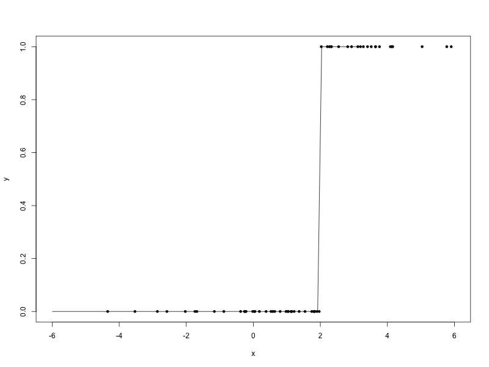